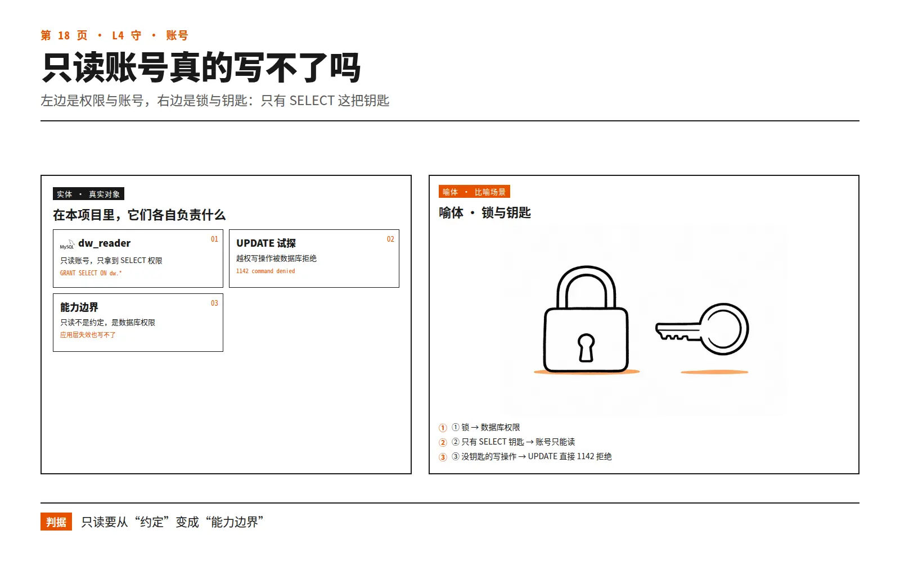
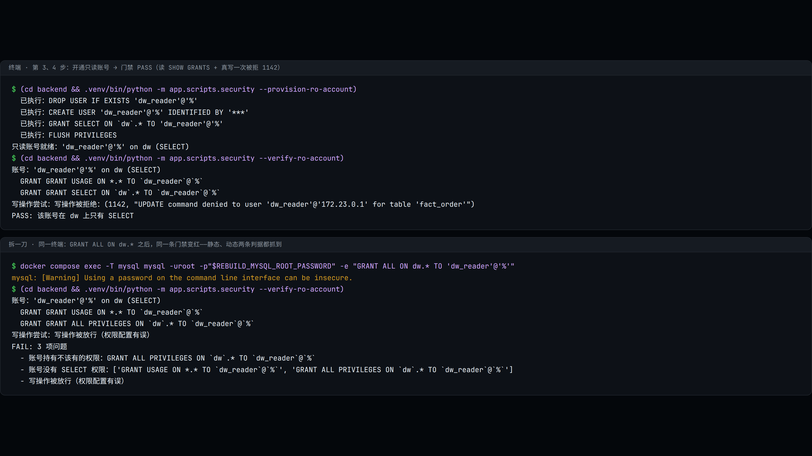

练本 · 阅读版（md 正典派生，改内容请改 manual/page-18.md）
第 18 页 · 守账号：只读账号真的写不了吗
城市坐标 · L4 城市安防 · 门禁｜只读账号是真的只读：给它一把只能看、不能写的钥匙。
前置：至少
mysql在跑且 healthy（docker compose ps）——本页全部判据只需要数据库，整栈都在时可顺带做第 13 页docker-smoke第 7 步。环境：
.env已由make docker-env生成；本页不重建镜像、不改代码。L4（守）从这一页开始。在哪跑：命令都在仓库根目录、同一个终端里整段连续执行；括号是子 shell，跑完你还在仓库根目录。
第 0 页两样就绪：
backend/.venv由第 0 页make install生成（本页.venv/bin/python靠它），宿主uv由第 0 页先装好（第 5 步uv run靠它）；缺了先回第 0 页（.venv也可cd backend && uv sync --frozen补）。
这一页构建什么
把“只读”从一条约定搬进数据库权限：开通一个在 dw 上只有 SELECT 的账号 dw_reader，再让门禁亲手证明它写不了。做完你得到一个能力边界——应用层的提示词、校验、策略全部失效，数据库也只会让它读。心智模型：只读要从“约定”变成“能力边界”。

猜一猜
- 要“证明”只读账号写不了：是读
SHOW GRANTS看它只有 SELECT，还是真执行一次写操作、等数据库拒绝？ - 给
dw_reader来一句GRANT ALL ON dw.*再重跑门禁：它会变红吗？红的是“权限表里有 ALL”，还是“写操作居然成功了”？
动手
第 1 步：拍快照。 本页拆的是数据库权限、不是文件，但先拍一张——待会儿用它证明“文件快照救不了数据库”（同名快照会被拒，重做本页就换个名字；换了名字就把下文所有 p18-before 一并替换，旧快照留在 .lab/snapshots/ 不影响本页结论）：
scripts/lab save p18-before
第 2 步：让当前终端拿到密码。 开通要两把密码：MySQL root 的（建账号）和 dw_reader 的（设密码）。
密码在哪：只在 .env 里（第 13 页 make docker-env 生成；.env 被 .gitignore 忽略，.env.example 里只有 change-me-ro 占位——明文密码不进仓库）。
必须 source：把它导出成 REBUILD_MYSQL_ROOT_PASSWORD / REBUILD_DW_RO_PASSWORD；直接 bash 跑脚本只改子进程，改不了你当前终端。
没 source 或换了终端的症状：
backend这边会报缺少环境变量 REBUILD_DW_RO_PASSWORD；- 拆一刀里那条
mysql命令则会先让你Enter password:再报ERROR 1045 (28000): Access denied for user 'root'@'localhost' (using password: NO)。
结论：都只是没 source，不是库/密码坏了：
source scripts/export-docker-env.sh
第 3 步：开通只读账号。 第 13 页的 init 已经开通过一次，这里再开一次：语句是“先 DROP USER IF EXISTS 再 CREATE USER”，所以权限集合永远恰好是 SELECT，不会攒下旧授权。这条命令也是下面“拆一刀”的还原命令：
(cd backend && .venv/bin/python -m app.scripts.security --provision-ro-account)
第 4 步：跑判据。 门禁做两件事：读 SHOW GRANTS，再真的执行一条 UPDATE ... WHERE 1=0——匹配 0 行，但数据库要先检查 UPDATE 权限；被拒绝且错误码是 1142 才算 PASS。退出码就是结论（0 = 通过）：
(cd backend && .venv/bin/python -m app.scripts.security --verify-ro-account)
第 5 步（可选）：make stage5-live。 前提：上面的 source 还在同一个终端里、MySQL 在跑；本机约 2 秒（环境已装好时；第一次装依赖会久得多）。它重复开通 + 验证，再跑 --demo 两屏对比（旧系统 didilili 的 ALL PRIVILEGES 真删掉探针表，新系统在连库前拒绝），末行 S5 LIVE PASS。不跑不影响本页判据。
make stage5-live
你应该看到
第 2 步成功时一个字都不打印；第 3、4 步如下（1142 后面的 IP 因机器而异；两行里重复的 GRANT GRANT 是 CLI 的打印前缀，不是语法错）；第 5 步节选：
# 第 3 步
已执行：DROP USER IF EXISTS 'dw_reader'@'%'
已执行：CREATE USER 'dw_reader'@'%' IDENTIFIED BY '***'
已执行：GRANT SELECT ON `dw`.* TO 'dw_reader'@'%'
已执行：FLUSH PRIVILEGES
只读账号就绪：'dw_reader'@'%' on dw (SELECT)
# 第 4 步
账号：'dw_reader'@'%' on dw (SELECT)
GRANT GRANT USAGE ON *.* TO `dw_reader`@`%`
GRANT GRANT SELECT ON `dw`.* TO `dw_reader`@`%`
写操作尝试：写操作被拒绝：(1142, "UPDATE command denied to user 'dw_reader'@'172.22.0.1' for table 'fact_order'")
PASS: 该账号在 dw 上只有 SELECT
# 第 5 步
== S5 · 两屏对比：旧系统执行 / 新系统拒绝 ==
第二句真的执行了：是（探针表 已被 DROP）
判定：拒绝（原因码 SQL_MULTIPLE_STATEMENTS）
探针表：还在（数据库没被碰过）
S5 LIVE PASS

对账
- 猜 1：两条都做，缺一不可。
--verify-ro-account先读SHOW GRANTS（静态：除了USAGE和SELECT不该有别的东西），再真写一次（动态：UPDATE ... WHERE 1=0）。
为什么用 WHERE 1=0：那句 UPDATE 一行都改不到，但权限检查在“改不改得到”之前——这是安全测试的标准做法：用不可能命中任何行的写操作，碰一次权限，不动数据。
拒绝也要挑原因：错误码必须是 1142（权限不足）；1146（表不存在）之类说明验证自己没跑起来，门禁同样 FAIL——不能把“验证坏了”当成“账号只读”。
- 猜 2：能，两条判据都会红。
GRANT ALL ON dw.*之后，SHOW GRANTS里出现ALL PRIVILEGES（静态抓到），UPDATE也真的成功了（动态抓到）。
红三条：实际输出是 FAIL: 3 项问题，多出来的一条是“账号没有 SELECT 权限”——因为静态检查按字符串找 SELECT，而 ALL PRIVILEGES 字面里没有这个词；这是判据的噪音，结论不靠它，“写操作被放行”才是硬信号。
-
为什么权限比提示词/代码可靠。
-
提示词是给模型的约定（模型可以不听，也可能被新的调用方绕过）；
- 策略是代码的自觉（可能漏判，新入口忘了调用就失效）；
- 数据库权限是 MySQL 在执行层自己检查的——应用代码全错、有人拿这个账号手动连库，也只能 SELECT。
分工：前两层决定“正常路径上该不该写”，这一层决定“能不能写”。
- 它防哪些事故。 旧系统的
didilili是GRANT ALL PRIVILEGES ON dw.*，所以一条SELECT ...; DROP TABLE ...能删掉表（第 5 步两屏里被删的探针表）；UPDATE能篡改订单金额。
换成 dw_reader 后实测：UPDATE、DROP、跨库读 mysql.user 全部 1142，而 SELECT COUNT(*) FROM fact_order 正常返回 115。
边界：它不证明“读得对/读得少”（那是检索与策略的职责），只证明写不了。
- 门禁怎么验、哪里也在验。 判据就在
backend/tests/security/test_account.py（10 条）里，连“写失败但不是权限错误不能算通过”都有测试。
第 13 页也在验：make docker-smoke 第 7 步（== 7/8 只读账号验证 == → PASS: 该账号在 dw 上只有 SELECT）跑的就是同一条 --verify-ro-account，只是换成在 backend 容器里跑。
密码不落屏：CLI 把 IDENTIFIED BY '…' 打成 ***。
你现在拥有：一个在数据库层被强制只能读的账号，和一条能被人重放的判据——不再是“提示词里写了只读就算数”。
拆一刀
把“能力边界”拆掉：给 dw_reader 加一句数据库级全权，重跑同一条门禁，看它红在哪。
下面这段沿用第 2 步 source 过的那个终端；如果新开了终端，先 source scripts/export-docker-env.sh。
没 source 的症状：$REBUILD_MYSQL_ROOT_PASSWORD 是空的，mysql 会先让你 Enter password: 再报 ERROR 1045 (28000): Access denied … (using password: NO)，看着像库/密码坏了，其实只是没 source。
docker compose exec -T mysql mysql -uroot -p"$REBUILD_MYSQL_ROOT_PASSWORD" -e "GRANT ALL ON dw.* TO 'dw_reader'@'%'"
(cd backend && .venv/bin/python -m app.scripts.security --verify-ro-account)
mysql: [Warning] Using a password on the command line interface can be insecure. 是客户端的例行提醒，不是失败。
门禁变红，退出码 1。
若用 tee/重定向把输出存成日志，FAIL: 摘要会先于上面的明细出现（明细走 stdout、FAIL: 走 stderr，缓冲顺序不同）——那是保存方式造成的顺序，不是输出不对，别怀疑判据：
账号：'dw_reader'@'%' on dw (SELECT)
GRANT GRANT USAGE ON *.* TO `dw_reader`@`%`
GRANT GRANT ALL PRIVILEGES ON `dw`.* TO `dw_reader`@`%`
写操作尝试：写操作被放行（权限配置有误）
FAIL: 3 项问题
- 账号持有不该有的权限：GRANT ALL PRIVILEGES ON `dw`.* TO `dw_reader`@`%`
- 账号没有 SELECT 权限：['GRANT USAGE ON *.* TO `dw_reader`@`%`', 'GRANT ALL PRIVILEGES ON `dw`.* TO `dw_reader`@`%`']
- 写操作被放行（权限配置有误）
关键坑：scripts/lab reset 救不了这个。 lab 快照只收文件，数据库权限不在里面——拆完跑 scripts/lab diff p18-before，它会说“工作区与快照完全一致”，可门禁还是红的。
手动还原推荐用下面第一段代码里的 --provision-ro-account（一句重建账号，权限集合回到 SELECT）。
备选 REVOKE：第二段只用于理解“去掉 ALL、补回 SELECT”两件事，一条命令里同时有双引号、单引号和分号，从正文复制极易断，请整行复制。两段二选一，推荐第一段：
(cd backend && .venv/bin/python -m app.scripts.security --provision-ro-account)
(cd backend && .venv/bin/python -m app.scripts.security --verify-ro-account)
docker compose exec -T mysql mysql -uroot -p"$REBUILD_MYSQL_ROOT_PASSWORD" -e "REVOKE ALL PRIVILEGES, GRANT OPTION FROM 'dw_reader'@'%'; GRANT SELECT ON dw.* TO 'dw_reader'@'%'"
(cd backend && .venv/bin/python -m app.scripts.security --verify-ro-account)
跑完推荐的第一段，末行回到 PASS: 该账号在 dw 上只有 SELECT。这次拆一刀的答案：静态判据和动态判据都抓到了，但“文件快照”没抓到——数据库状态必须手动还原。
不还原的后果：分单步和整跑看——单步 --verify-ro-account（本页第 4 步那条）会一直红，脏权限还在。
整跑 make docker-smoke 不会红：第 1 步的 up 每次都会重跑一次性 init，init 又用 --provision-ro-account 重建 dw_reader，所以第 7 步反而是绿的。整跑 smoke 会被 init 重置——这正是第 22 页级考核要抢窗口的原因（越权必须在 init 退出后、第 7 步开始前注入 GRANT，第 22 页实测窗口只有约 3 秒）。